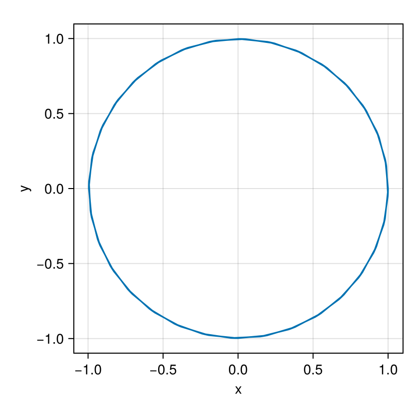

External electromagnetic fields
VlasovWithExternalFields is the Vlasov equation of one species in a prescribed electromagnetic field, in three position and three velocity dimensions:
\[\frac{\partial f}{\partial t} + v \cdot \nabla_x f + \frac{q}{m} \bigl( E(t, x) + v \times B(t, x) \bigr) \cdot \nabla_v f = 0 .\]
The field does not depend on $f$, so the particles move independently of each other:
\[\dot{x}_\alpha = v_\alpha , \qquad \dot{v}_\alpha = \frac{q}{m} \bigl( E(t, x_\alpha) + v_\alpha \times B(t, x_\alpha) \bigr) .\]
The field interface
A field is any value with a method of electric_field and of magnetic_field. Both take the field, the time and the position as an SVector{3}, and return the Cartesian components as an SVector{3} of the element type of the position. There is no abstract field type.
UniformField(E, B)is constant in space and time.- With
ElectromagneticFieldsloaded, theFieldFunctionsof a Cartesian equilibrium of that package are fields, for exampleFieldFunctions(ABCEquilibrium(a, b, c)). A field in a curvilinear chart has no method, because its components are not Cartesian.
A new field type defines the two methods:
struct RotatingField end
VlasovMethods.electric_field(::RotatingField, t, x::SVector{3, T}) where {T} = zero(SVector{3, T})
VlasovMethods.magnetic_field(::RotatingField, t, x::SVector{3, T}) where {T} =
SVector{3, T}(cos(t), sin(t), 1)The splitting method
SplittingMethod splits the equations of motion into the drift $\dot{x} = v$ and the Lorentz force. The exact step of the drift is $x \leftarrow x + h v$. The step of the Lorentz force is the Boris push, with the field evaluated at the start of the substep; with $E = 0$ it is a rotation of the velocity about $B$, which keeps $|v|$ exactly. One step of the Strang composition is a half drift, two half pushes and a half drift.
The example below follows one particle of the charge $-1$ in the uniform field $B = e_z$ for ten gyration periods of $2\pi$, with 32 steps per period:
using HDF5
using VlasovMethods
dist = ParticleDistribution(3, 3, 1)
dist.particles.x .= [1.0, 0.0, 0.0]
dist.particles.v .= [0.0, 1.0, 0.1]
dist.particles.w .= 1.0
field = UniformField([0.0, 0.0, 0.0], [0.0, 0.0, 1.0])
model = VlasovWithExternalFields(dist, field; charge = -1.0, mass = 1.0)
method = SplittingMethod(model, (0.0, 20π), 2π / 32)
h5file = tempname() * ".hdf5"
run!(method, h5file)
z = h5read(h5file, "z")
speed = [sqrt(sum(abs2, z[4:6, 1, s])) for s in axes(z, 3)]
(speed_drift = maximum(speed) - minimum(speed), final_position = z[1:3, 1, end])(speed_drift = 1.1102230246251565e-15, final_position = [0.9987335947934856, -0.05025040938520489, 6.283185307179478])The particle gyrates on the unit circle about the $z$ axis and drifts along it with the velocity $0.1$. The speed is constant to rounding, and after ten periods the particle is back near $(1, 0, 2\pi)$, with a phase error of the splitting.
using CairoMakie
CairoMakie.activate!(type = "png")
fig = Figure(size = (420, 420))
ax = Axis(fig[1, 1]; xlabel = "x", ylabel = "y", aspect = 1)
lines!(ax, z[1, 1, :], z[2, 1, :])
fig
Runs without particles
An empty particle list is allowed. The model, its splitting method and run! work on the empty state, and the run writes an empty trajectory. This is the vacuum case of a parameter sweep.